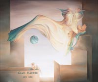

| Artist: | Glass Hammer |
| Title: | Lex Rex |
| Label: | Arion Records SR1123 |
| Length(s): | 67 minutes |
| Year(s) of release: | 2002 |
| Month of review: | [01/2003] |
| 1) | Good Evening | 0.51 |
| 2) | Tales Of The Great Wars | 10.42 |
| 3) | One King | 6.07 |
| 4) | Further Up And Further In | 15.13 |
| 5) | Intermission | 1.08 |
| 6) | Music For Four Hands (and Temporal Anomaly) | 2.19 |
| 7) | A Cup Of Trembling | 7.50 |
| 8) | Centurion | 7.47 |
| 9) | When We Were Young | 9.53 |
| 10) | Goodnight | 1.11 |
| 11) | Heroes And Dragons | 3.45 |
Tales Of The Great Wars has a length intro, leading into a section that features some multiple vocals, mildly Echolyn influenced, with somewhat thin sounding accompanyment. As the intermezzo comes on, the instrumentalists seem to kick loose, with some nice guitar and synth works. From this the track continues in a way more progressive and less theatrical way than the album intro would suggest.
One King starts with some flashy key stuff, plodding bass sounds leading into the vocal opening. Most of this track, though, is instrumental featuring lively keys, pomping basses and screamy guitars, each at their own time. This track is pretty over the top, once again by Echolyn influence.
Further Up And Further In takes us exactly where the title would suggest it takes us. As could be expected of a song of its length it features a slower, more methodical build up, without trying to put as many notes as possible in every second. The mid section now shows hints of Yes, in both keys and guitar melody. As good an idea as it might have been to take the speed down a bit, the attention does tend to drift a bit at times. The maximum it works towards, though, sort of makes up for this.
Intermission returns the announcer. This stuff is pretty tongue in cheek, however, it does seem out of sync with the regular material on the disc, that doesn't inhibit any theatrics. Aside that, it doesn't get any funnier on repeat listenings.
Music For Four Hands is a clear sounding piano piece. Quite different from what's gone before, but it sets us up nicely for act 2, starting of with A Cup of Trembling. The trembling seems to have emptied the cup a bit, since only half of this track is as soaring as the previous ones, starting out a bit bland. Still nice enough.
Centurion starts out pretty key dominated, but leaves some room for guitars and vocal as it progresses. The intermezzo even has some experiment in it, although the keys do return strongly. The closing has a bit of Hackett style guitar play left for us.
When We Were Young closes out the "normal album". This track seems a stage for moog and mellotron. Absolutely wonderful bombastic stuff. The closing makes a lot of room for Yes like guitar stuff with dito vocals. Trip down memory lane, this track is.
Goodnight has the announcer tell us the album is over. We had a feeling about that already, but thanks anyway, dude.
Heroes And Dragons is a initially mostly acoustic ditty, which doesn't really add anything to the album, and was kept outside the announcer's rule with reason.
You can find Glass Hammer at www.glasshammer.com